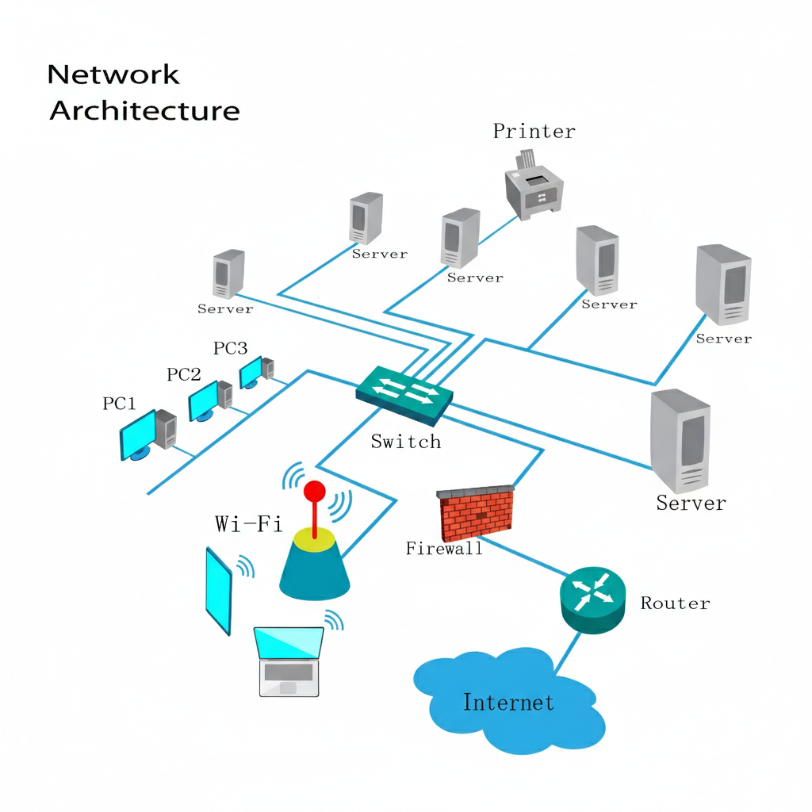

Pagina sobre la infraestructura del proyecto


Esta es la base. Sin una red robusta, un hospital moderno se detiene.

Los hospitales generan terabytes de datos diarios, especialmente en imágenes.
La integración de dispositivos médicos a la red IT.
El sector salud es el objetivo número uno de los ataques de Ransomware.
El mayor dolor de cabeza en salud es que los sistemas "hablen" entre sí.